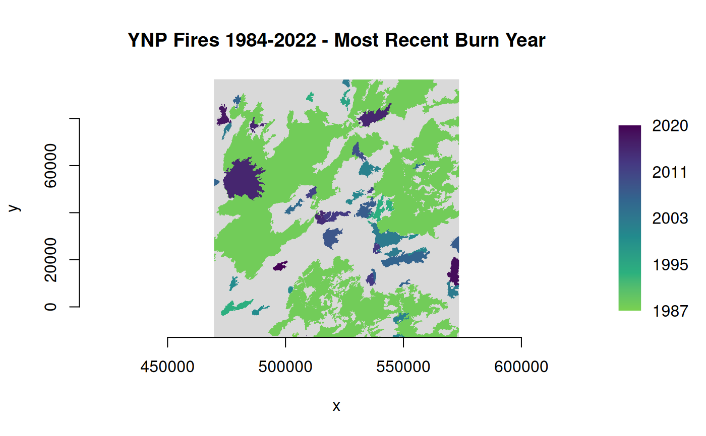

rasterize() burns vector geometries (points, lines, or polygons) into
the band(s) of a raster dataset. Vectors are read from any GDAL
OGR-supported vector format.
This function is a wrapper for the gdal_rasterize command-line
utility (https://gdal.org/en/stable/programs/gdal_rasterize.html).
Usage
rasterize(
src_dsn,
dstfile,
band = NULL,
layer = NULL,
where = NULL,
sql = NULL,
burn_value = NULL,
burn_attr = NULL,
invert = NULL,
te = NULL,
tr = NULL,
tap = NULL,
ts = NULL,
dtName = NULL,
dstnodata = NULL,
init = NULL,
fmt = NULL,
co = NULL,
add_options = NULL,
quiet = FALSE
)Arguments
- src_dsn
Data source name for the input vector layer (filename or connection string).
- dstfile
Either a character string giving the filename of the output raster dataset, or an object of class
GDALRasterfor the output. Must support update mode access. If given as a filename, this file will be created (or overwritten if it already exists - see Note). If given as aGDALRasterobject for an existing dataset, then the affected pixels are updated in-place (object must be open with write access).- band
Numeric vector. The band(s) to burn values into (for existing
dstfile). The default is to burn into band 1. Not used when creating a new raster.- layer
Character vector of layer names(s) from
src_dsnthat will be used for input features. At least one layer name or asqloption must be specified.- where
An optional SQL WHERE style query string to select features to burn in from the input
layer(s).- sql
An SQL statement to be evaluated against
src_dsnto produce a virtual layer of features to be burned in (alternative tolayer).- burn_value
A fixed numeric value to burn into a band for all features. A numeric vector can be supplied, one burn value per band being written to.
- burn_attr
Character string. Name of an attribute field on the features to be used for a burn-in value. The value will be burned into all output bands.
- invert
Logical scalar.
TRUEto invert rasterization. Burn the fixed burn value, or the burn value associated with the first feature, into all parts of the raster not inside the provided polygon.- te
Numeric vector of length four. Sets the output raster extent. The values must be expressed in georeferenced units. If not specified, the extent of the output raster will be the extent of the vector layer.
- tr
Numeric vector of length two. Sets the target pixel resolution. The values must be expressed in georeferenced units. Both must be positive.
- tap
Logical scalar. (target aligned pixels) Align the coordinates of the extent of the output raster to the values of
tr, such that the aligned extent includes the minimum extent. Alignment means that xmin / resx, ymin / resy, xmax / resx and ymax / resy are integer values.- ts
Numeric vector of length two. Sets the output raster size in pixels (xsize, ysize). Note that
tscannot be used withtr.- dtName
Character name of output raster data type, e.g.,
Byte,Int16,UInt16,Int32,UInt32,Float32,Float64. Defaults toFloat64.- dstnodata
Numeric scalar. Assign a nodata value to output bands.
- init
Numeric vector. Pre-initialize the output raster band(s) with these value(s). However, it is not marked as the nodata value in the output file. If only one value is given, the same value is used in all the bands.
- fmt
Output raster format short name (e.g.,
"GTiff"). Will attempt to guess from the output filename iffmtis not specified.- co
Optional list of format-specific creation options for the output raster in a vector of "NAME=VALUE" pairs (e.g.,
options = c("TILED=YES","COMPRESS=LZW")to set LZW compression during creation of a tiled GTiff file).- add_options
An optional character vector of additional command-line options to
gdal_rasterize(see thegdal_rasterizedocumentation at the URL above for all available options).- quiet
Logical scalar. If
TRUE, a progress bar will not be displayed. Defaults toFALSE.
Note
rasterize() creates a new target raster when dstfile is given as a
filename (character string). In that case, some combination of the fmt,
dstnodata, init, co, te, tr, tap, ts, and dtName arguments
will be used. The resolution or size must be specified using either the tr
or ts argument for all new rasters. The target raster will be overwritten
if it already exists and any of these creation-related options are used.
To update an existing raster in-place, an object of class GDALRaster may
be given for the dstfile argument. The GDALRaster object should be open
for write access.
Examples
# MTBS fire perimeters for Yellowstone National Park 1984-2022
dsn <- system.file("extdata/ynp_fires_1984_2022.gpkg", package="gdalraster")
sql <- "SELECT * FROM mtbs_perims ORDER BY mtbs_perims.ig_year"
out_file <- file.path(tempdir(), "ynp_fires_1984_2022.tif")
rasterize(src_dsn = dsn,
dstfile = out_file,
sql = sql,
burn_attr = "ig_year",
tr = c(90,90),
tap = TRUE,
dtName = "Int16",
dstnodata = -9999,
init = -9999,
co = c("TILED=YES", "COMPRESS=LZW"))
#> 0...10...20...30...40...50...60...70...80...90...100 - done.
ds <- new(GDALRaster, out_file)
pal <- scales::viridis_pal(end = 0.8, direction = -1)(6)
ramp <- scales::colour_ramp(pal)
plot_raster(ds, legend = TRUE, col_map_fn = ramp, na_col = "#d9d9d9",
main = "YNP Fires 1984-2022 - Most Recent Burn Year")

ds$close()